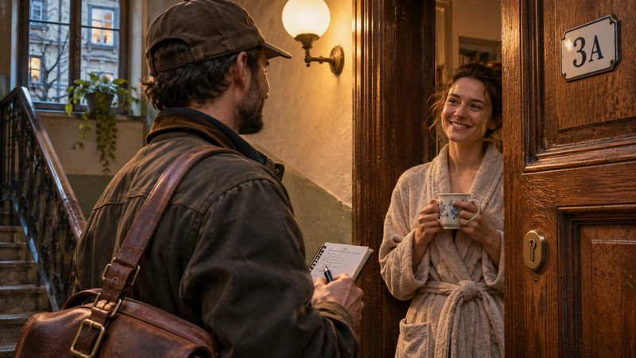

Lockwright: Locksmith on Call
A warm game about an emergency locksmith: you open every invented lock with two thumbs, feeling and hearing what happens inside, and the whole game can be played without looking at the screen.
In development for iOS and Android. No ads, no energy, coins can’t be bought.
About the game
Someone is stuck outside their own door, and they call you. In Lockwright you see a photoreal cutaway of the mechanism, but the important part comes through your thumbs and your ears. A pin that binds pushes back and scrapes. A pin that sets gives a short, dry click. A spool pin pretends to set. Between jobs you buy and repair tools in the workshop, and every new tool opens a new kind of lock. "In the dark" mode turns the screen off: touch and sound are all you have. Haptics are never the only signal, so the game plays fine without them. Every lock is invented and unbranded. It's a game, not a course.

You feel the lock with your thumbs
Thumb
A pin that binds pushes back and scrapes. A pin that sets gives a short, dry click under your thumb.
Ear
Every state has its own sound: brass, steel, wood. Haptics are never the only signal.
Eye
A photoreal cutaway shows what you feel: the gap, the tilt, the resistance.
“In the dark” mode
The screen goes dark; touch and sound remain. The whole game can be played without looking.
Invented mechanisms
Every lock in the game is invented and unbranded, with proportions chosen so you can read them.


Screen mockups
The “realism” visual direction (mockups, not screenshots of a finished game).